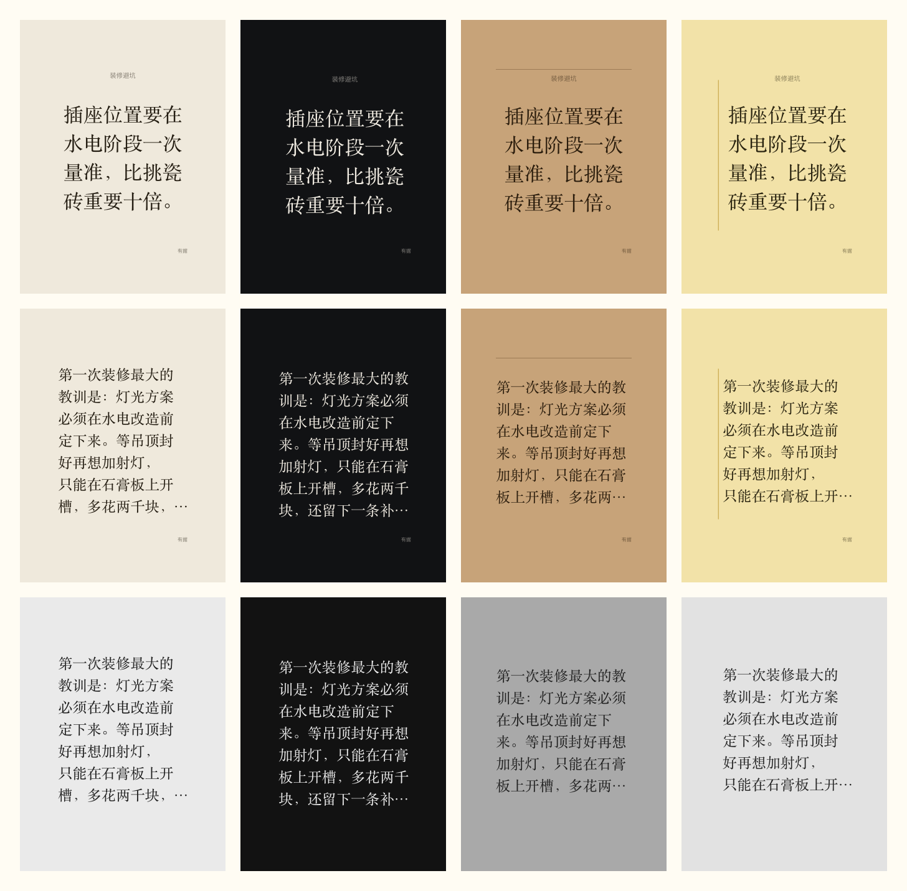
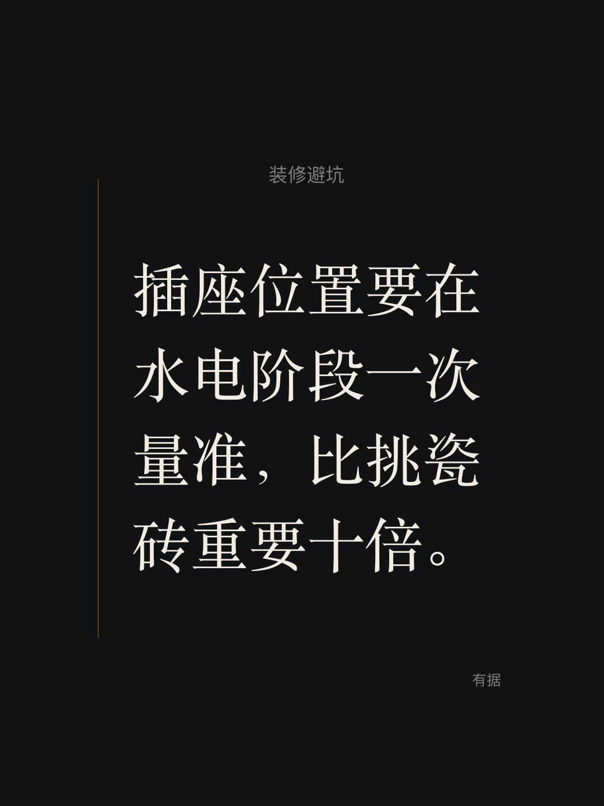
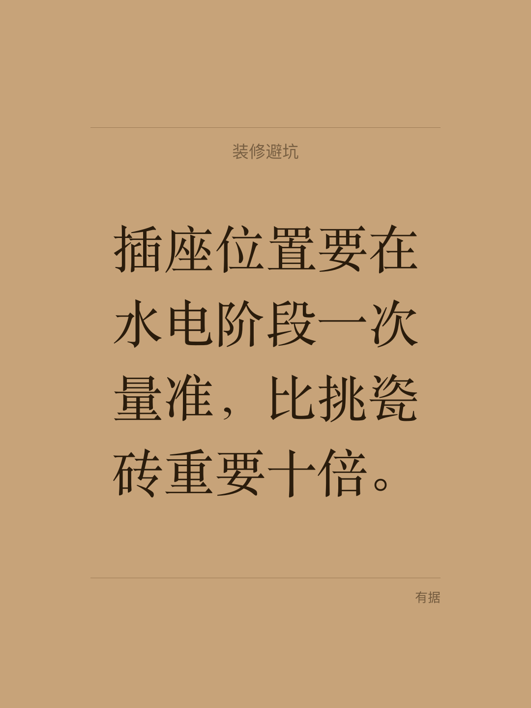
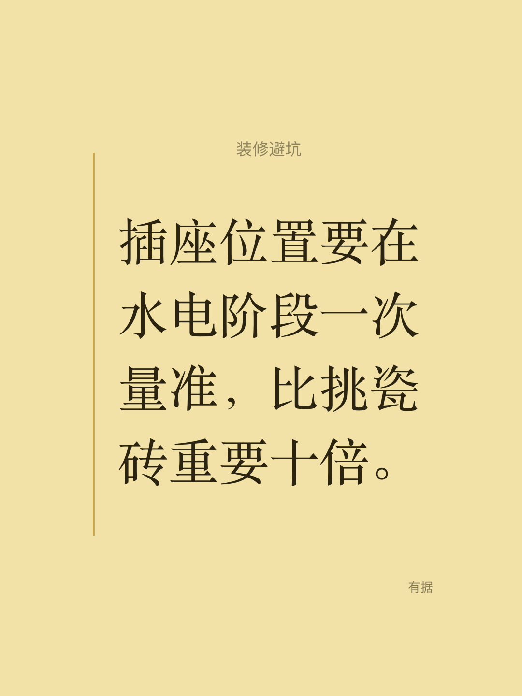
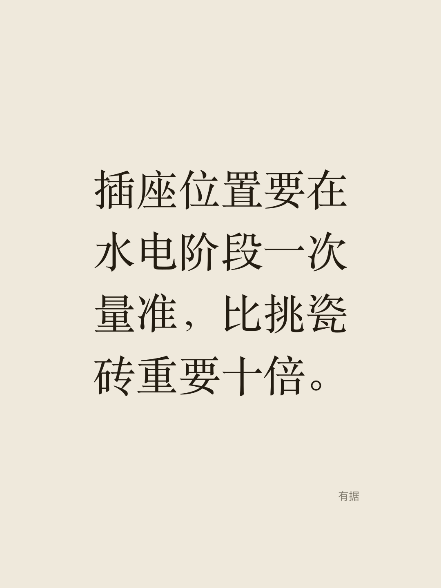
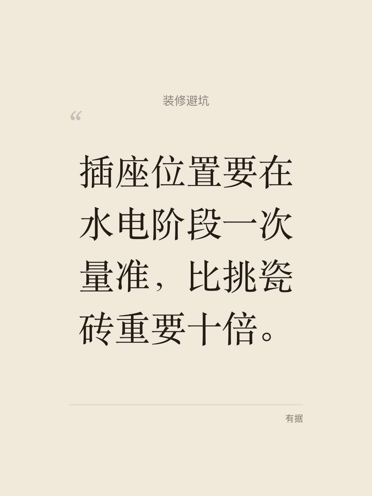
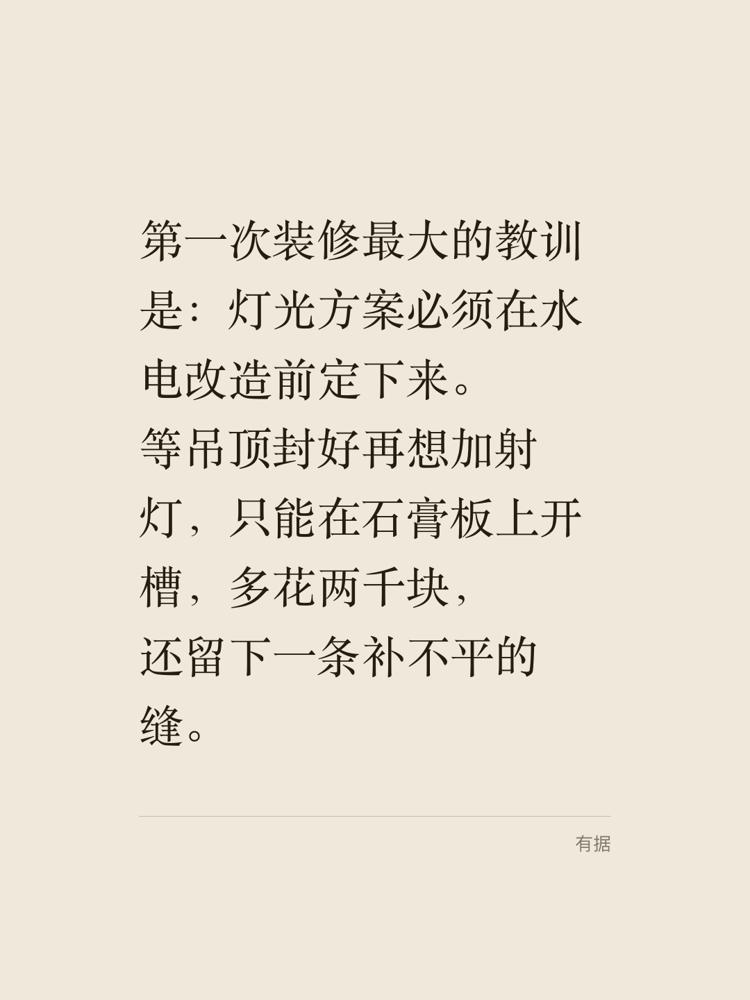
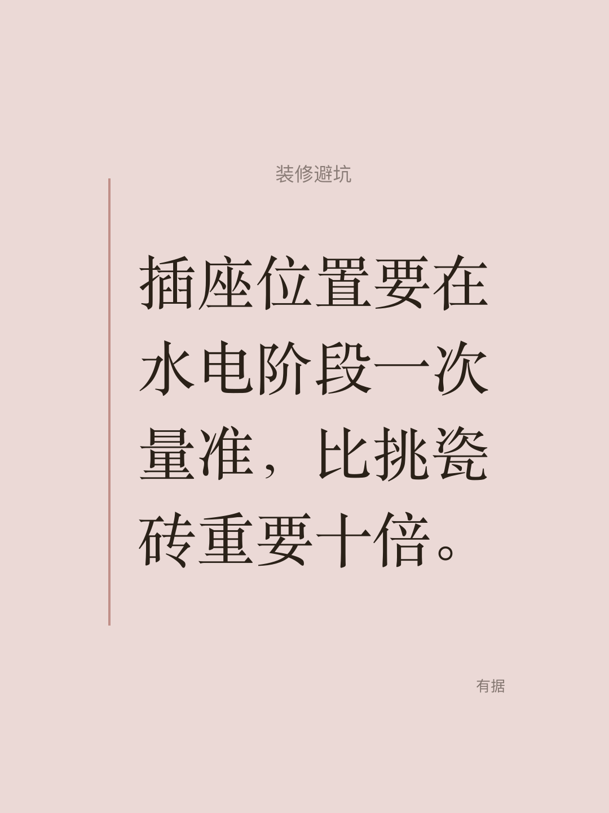
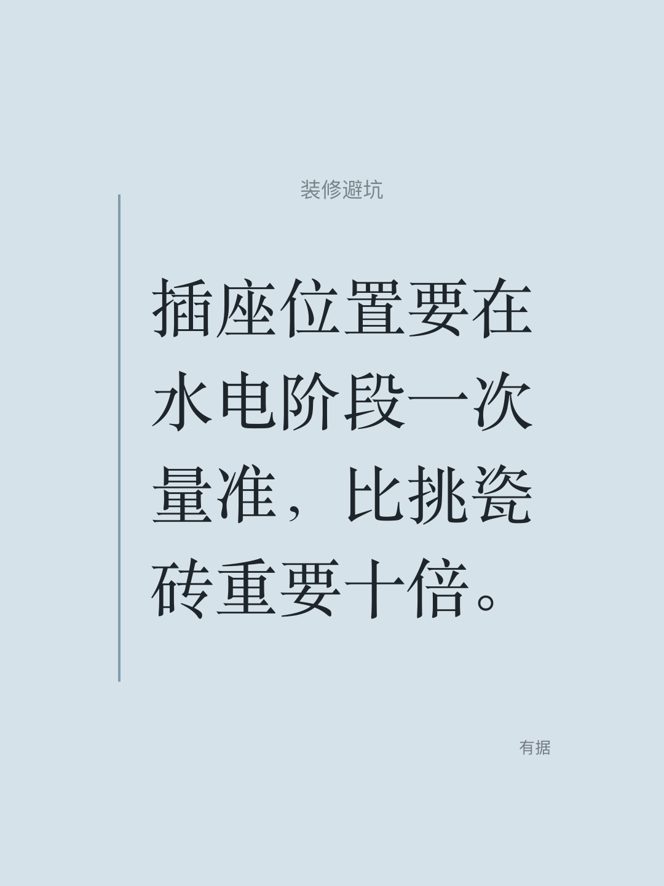
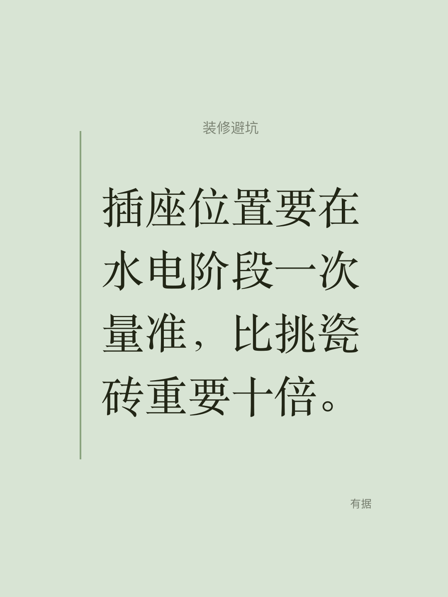

有据 · 文字海报 v2 设计样张
1080×1440 · 4 款题材保留 · 统一「高级基准」C1–C7 · 每款只留 1 个材质记忆点 · solid 底、零渐变、零纹理、零模糊阴影
① 缩略图仲裁 这是最终拍板依据：海报在信息流里只有 330px 宽，放大看不代表站得住
底色用的是信息流卡片底 ds_elevated #FFFCF3。三行分别是：短句版 / 长文版 / 抹掉全部细节 + 灰阶（C7 验收：细节消失后块面与层级是否仍成立）。

素纸底 #EFE9DC
卡片底 #FFFCF3
胶片底 #111214
牛皮纸底 #C7A379
便利贴底 #F2E2A8
② 四款短句版 放在模拟信息流卡片里看（同一张卡底）
素纸默认款 · 记忆点=页脚极细双线
插座位置要在水电阶段一次量准，比挑瓷砖重要十倍。有据 · 分享
胶片深色锚点 · 记忆点=左侧一条 1px 暖金竖线

插座位置要在水电阶段一次量准，比挑瓷砖重要十倍。有据 · 分享
牛皮纸记忆点=上下两条 1px 信纸线

插座位置要在水电阶段一次量准，比挑瓷砖重要十倍。有据 · 分享
便利贴去拟物化 · 记忆点=左侧 4px 竖条

插座位置要在水电阶段一次量准，比挑瓷砖重要十倍。有据 · 分享
③ 四款长文版 不画 title（title 由卡片自身的标题行承担）；已按「严守 C6」出图：主视觉 76px，超出 64 字截断加 …
④ 标题处理的 4 个变体 只出素纸一款，拍板后 4 款统一
A · 标题作**小标签**（34px 无衬线 50% 透明）在正文上方，正文是唯一主视觉
推荐：层级干净，正文是主角

B · 完全不画标题，只剩正文 + 落款
最克制，但丢掉一次「分类」的信息

C · A + 一枚引号母题（120px 20% 透明）
实测像一枚游离的污点，建议弃用

D · 长文**不守 C6**：64px 把 85 字排满
能多装字，但缩略图下明显偏小（见 Q1）
⑤ 便利贴备选色 Q4 用：Apple 便签 6 色体系的低饱和版，同一套版式只换色
当前 · 低饱和暖黄 #F2E2A8
4 款里唯一有彩色，年轻但不刺眼

备选 · 粉 #EBD9D6
更柔，但与牛皮纸的暖调容易撞

备选 · 蓝 #D6E2EA
与暖纸系形成冷调对照，气质最「现代笔记」

备选 · 绿 #D8E4D4 / 灰 #E2DED4
绿＝品牌抹茶感但偏弱；灰最克制、几乎无彩
⑥ 设计宪法自评（C1–C7）
| # | 规则 | 素纸 | 胶片 | 牛皮纸 | 便利贴 |
|---|
| C1 | 字号 ≤ 3 级（主视觉 / 小标签 / 落款） | 3 | 3+微标签 | 3 | 3 |
| C2 | 层级不倒挂，相邻差 ≥ 1.25×（104 / 34 / 26） | 3.06× / 1.31× | ✓ | ✓ | ✓ |
| C3 | 文字不越 15% 边距（x ≥ 162 / y ≥ 216） | ✓ | ✓ | ✓ | ✓ |
| C4 | ≤ 3 色 + 强调面积 < 3% | 2 色 | 3 色 | 3 色 | 3 色 |
| C5 | 每款 1 个记忆点；零渐变 / 零纹理 / 零模糊阴影 | ✓ | ✓ | ✓ | ✓ |
| C6 | 主视觉 ≥ 72px（缩到 330px 后 ≥ 22px） | ✓ | ✓ | ✓ | ✓ |
| └ 长文档（已按守 C6 出图：76px + 截断） | 76px ✓ | 76px ✓ | 76px ✓ | 76px ✓ |
| C7 | 抹掉细节 + 灰阶后仍成立 | ✓ | ✓ | ✓ | ✓ |
⑦ 待你拍板
Q1 · 长文档要不要严格守 C6？
- 已按「守」出图：76px 排 64 字后截断加
…，缩略图更醒目，详情页仍展示全文
- 不守的版本见 ④ D：64px 排满 85 字，信息全但缩略图偏小
- 你只需回「守 / 不守」
Q2 · 素纸在暖白卡片上的边界够不够？
- 当前明度对比 ≈ 1.18:1（
#EFE9DC vs #FFFCF3），能看出分界但不强
- 选项：a) 保持现状 b) 再压暗到
#E9E2D2 c) 信息流侧给封面加 1px 发丝描边
Q3 · 标题怎么处理？
- 短句：A（小标签）/ B（不画）—— 建议 A
- 长文：不画（当前）/ 保留（变体见 ④）—— 建议不画，卡片自带标题行已够
- 引号母题：建议整体弃用（变体 C 实测像污点）
Q4 · 便利贴的「黄」要不要保留？
- 当前
#F2E2A8 低饱和暖黄 —— 4 款里唯一有彩色的
- 替代：Apple 便签 6 色体系的低饱和版（粉
#EBD9D6 / 蓝 #D6E2EA / 绿 #D8E4D4 / 灰 #E2DED4）
- 你也可以让我把 4 色都出一遍再接